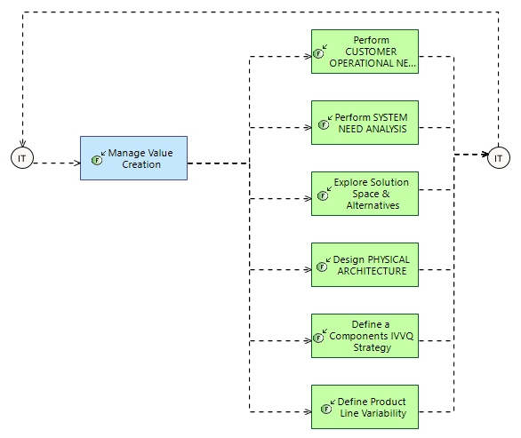

Value-driven Engineering Course
Engineering Process
Engineering Capabilities > Minimise Development Cost > Value-driven Engineering Course
Challenge: How to make sure to deliver the expected value all across the solution lifecycle to the customer/market and to the company .
- Evaluate value and priorities of main engineering assets for stakeholders : need, solution, schedule and deliveries, and more
- Organise engineering, development and deliveries according to most valuable and prioritary assets production
Related Diagrams
9 Valuedriven Engineering Course

This figure describes
How to make sure to deliver the expected value all across the solution lifecycle to the customer/market and to the company .
- Evaluate value and priorities of main engineering assets for stakeholders : need, solution, schedule and deliveries, and more
- Organise engineering, development and deliveries according to most valuable and prioritary assets production
For each step of this process, involving an engineering task or activity, the description gives some hints and methological recommendations. These recommendations are complementary with the description of the involved activity per se, in the context of the engineering concern and the process.
Contribution of each engineering activity to this process
| Engineering activity | Specifics of activity for this process |
|---|---|
|
|
Objective
To organise and plan engineering activities with the objective of creating value for our customers/market and the company.
To make sure the engineering activities create the expected value and take appropriate resulting actions when deviates from the plans.
|
|
|
Examples of valuable assets: from the customer and end-users point of view :
from the supplier company point of view :
|
|
|
Examples of valuable assets: from the customer and end-users point of view
from the supplier company point of view :
|
|
|
Include former value analysis as major criteria for alternatives exploration. |
|
|
Check solution against value for customer and company. Evaluate valuable assets in the solution definition and architecture, in order to optimise risk management, design & development planning, and possibly user stories and sprints in agile practices. Note: also apply to Logical Architecture design |
|
|
Order IVV steps according to customer and company value analysis. |
|
|
Decide of each variant according to customer and company value analysis. Check each product reference configuration against them. |